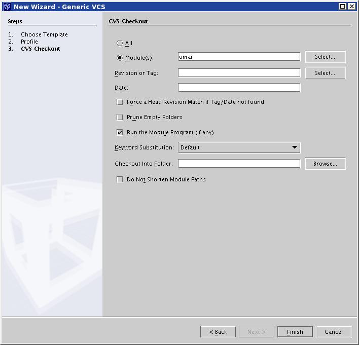

NetBeans is an integrated development environment (IDE) for Java
and other languages.
You can get a free copy of NetBeans at http://www.netbeans.org/.
These instructions assume that you have been able to download,
install, and start NetBeans.
Adding Files to the Project
- In the "Filesystems" tab, right-click on "Filesystems" and
select "Local Directory" in the "Mount" submenu.
Figure 4 - Mount Local Directory
- Navigate to the source code for the registry and select lib
from the misc directory.
Figure 5 - Selecting misc/lib
Although you probably put the source code in a different place
than shown in this example, the relative location of
subdirectories in the source code will be the same as shown here.
- Repeat for src/java and test.
For debugging to work, you need to select directories
containing the root-level Java package. For omar, they are the
directories shown, since they each contain a org directory
that corresponds to the org in the
org.freebxml.omar... package names used in the source
code.
You could, for example, select src instead and
still be able to edit the code in NetBeans, but you wouldn't be able
to step into the code when debugging.
- If you are also debugging the sunxacml code, which is not part
of the registry source code, mount its directory as well.
You should now have three (or four) "local filesystems".
Figure 6 - Local Filesystems
Setting the Project Main Class
When you want to run a project's program from within NetBeans,
you should set the project's "main class".
This is probably not so necessary when you are attaching to a
running program.
- Navigate to the class in the "Filesystems" tab.
- Right-click on the class and select "Set as Project Main Class".
Figure 7 - Setting the Project's Main Class
Attaching the Debugger to a Running Program
The simplest way to debug the registry server is to start its
servlet container with debugging enabled and then attach the
NetBeans debugger to the running servlet container.
See the Debugging page for how to
start the servlet container with debugging enabled.
- Select "Debug > Start Session > Attach...".
Figure 8 - Debug > Start Session > Attach...
- Enter the correct host name and port number in the dialog box
and select "OK".
Figure 9 - "Attach" Dialog Box
Setting a Breakpoint
- In the "Filesystems" tab, navigate to the source code file
containing the line at which to break, and left-click on the
file's name or icon to select the file.
- In the pane containing the source code, right-click on the
line at which to break and select "Toggle Breakpoint".

Figure 10 - Selecting "Toggle Breakpoint"
Alternatively, you can select the line with a left-click and
then press Shift-F8 on your keyboard to toggle the breakpoint.
Lines with a breakpoint set are highlighted in pink.
You can use NetBeans to checkout and manage your local copy of the CVS
files. These are the instructions to set it up and checkout OMAR (based on
NetBeans 4.0):
- Create the empty working directory for ebxmlrr (e.g. /home/diego/cvs/ebxmlrr).
- Use the menus to register your working directory:
menu Versioning | Versioning manager | add
- Enter the repository details as in the picture. If you have write access
to CVS and an SSH agent to provide keys, you can use 'ext' authentication and
your sourceforge username instead of anonymous.
Figure 11 - Register Working Directory
- Set the module to 'omar' so that you won't checkout unnecessary modules.

Figure 12 - Set module to 'omar'
- Finish the wizard (checkout might take a while). After that you can open
the project normaly with NetBeans and your files will have cvs versioning
support.
You can also register a working dirictory which you have already checked
out (using command line cvs tool, for instance). To process is similar and
the other parameter will be filled once you choose the working directory.